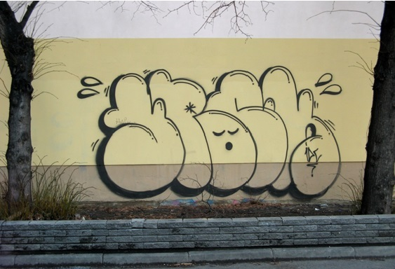
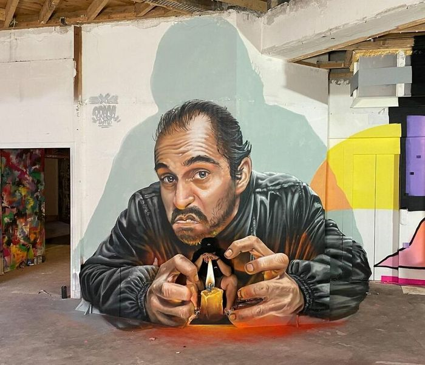

aqui temos um gráfico de barras para mostrar os votos em cada tipo de grafite conforme as respostas dos nossos usuários,
sabe o grafite que você escolheu no cadastro? Então, seu voto foi registrado aqui!
Relacione as colunas de descrição com o seu grafite !
1-

assinatura do grafiteiro, feito em formato de pixo com poucas letras
2-

grafite feito através de molde, podendo ser feito várias vezes de forma igual
3-
letras arredondadas , feitas de forma rápida e forma de vômito
4-
grafite com mais reconhecimento fora do Brasil, parece estar saindo da parede
5-
grafite muito detalhado e com muitas cores, quase indecifrável sem ajuda
Agora vamos te ajudar a praticar !
escolha o grafite que você deseja praticar:
escolha quantos dias na semana você deseja praticar: